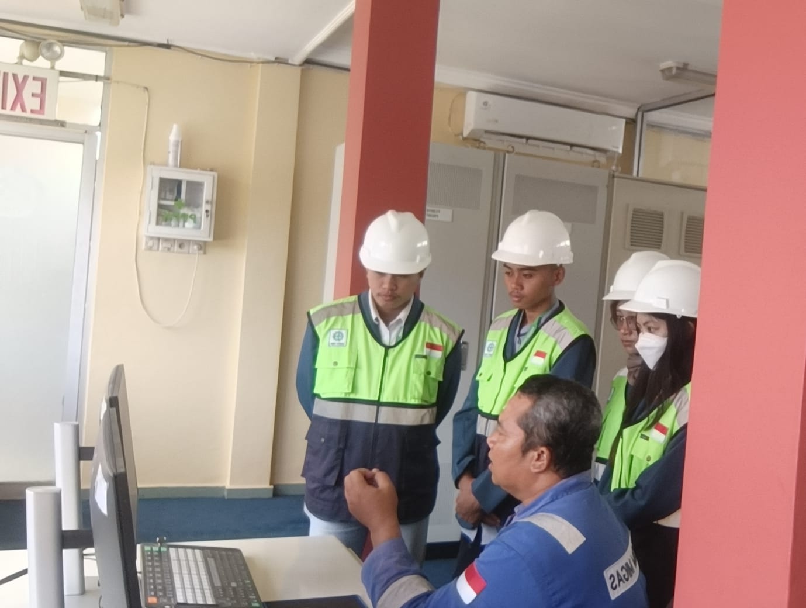

Pengalaman Magang
Pengalaman Kerja

Laboratorium Data Analyst Asisten
Departemen Fisika
- Bertanggung jawab mendukung kelancaran operasional kegiatan praktikum melalui persiapan dan pemeriksaan kesiapan peralatan, bahan, serta kebutuhan eksperimen. Melakukan pengolahan dan analisis data hasil praktikum menggunakan Microsoft Excel dan Python untuk membantu interpretasi hasil serta penyusunan laporan. Selain itu, menangani kendala teknis selama kegiatan praktikum, memantau pelaksanaan prosedur eksperimen, dan membantu memastikan kegiatan laboratorium berjalan secara terstruktur dan efisien.